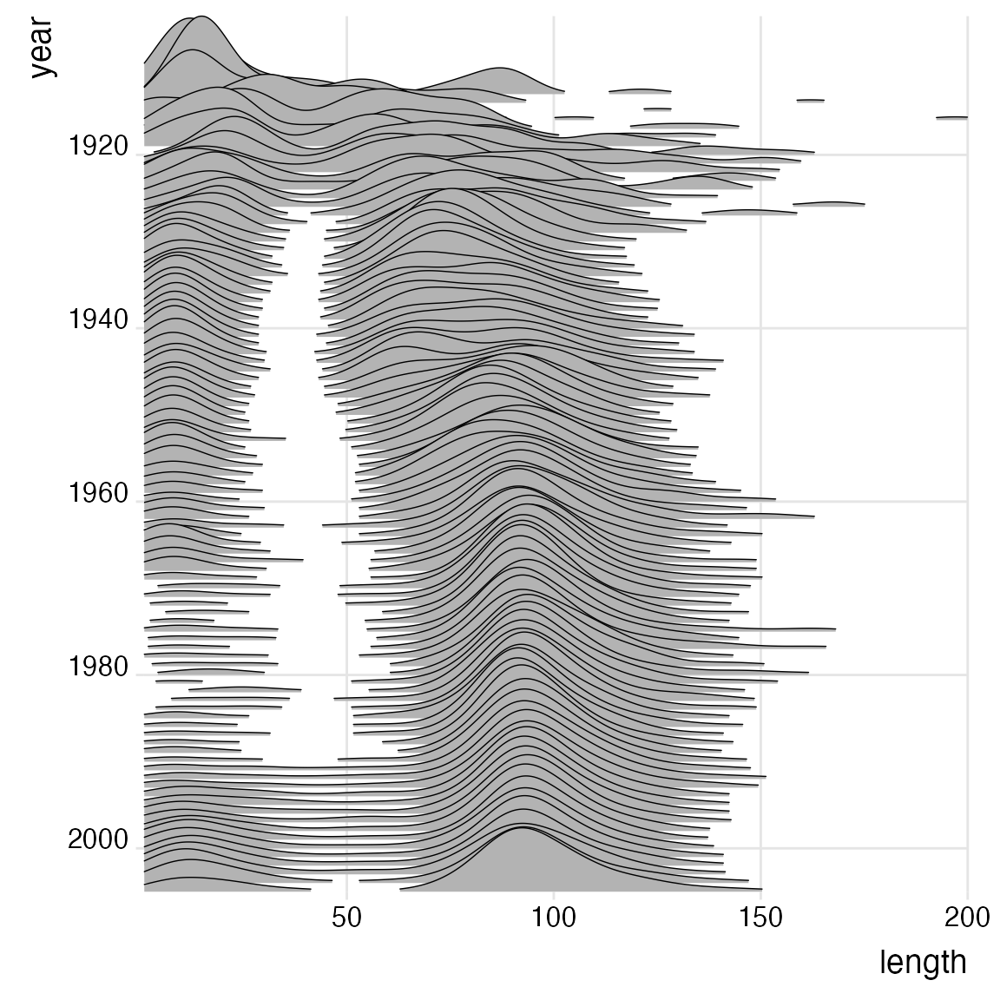
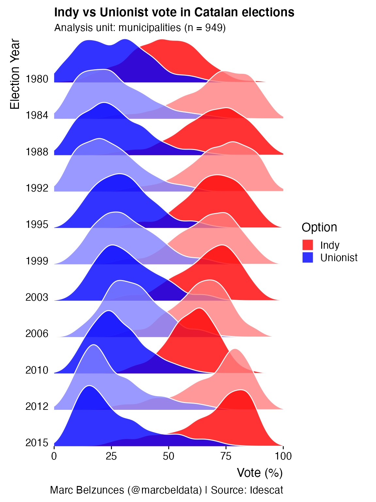
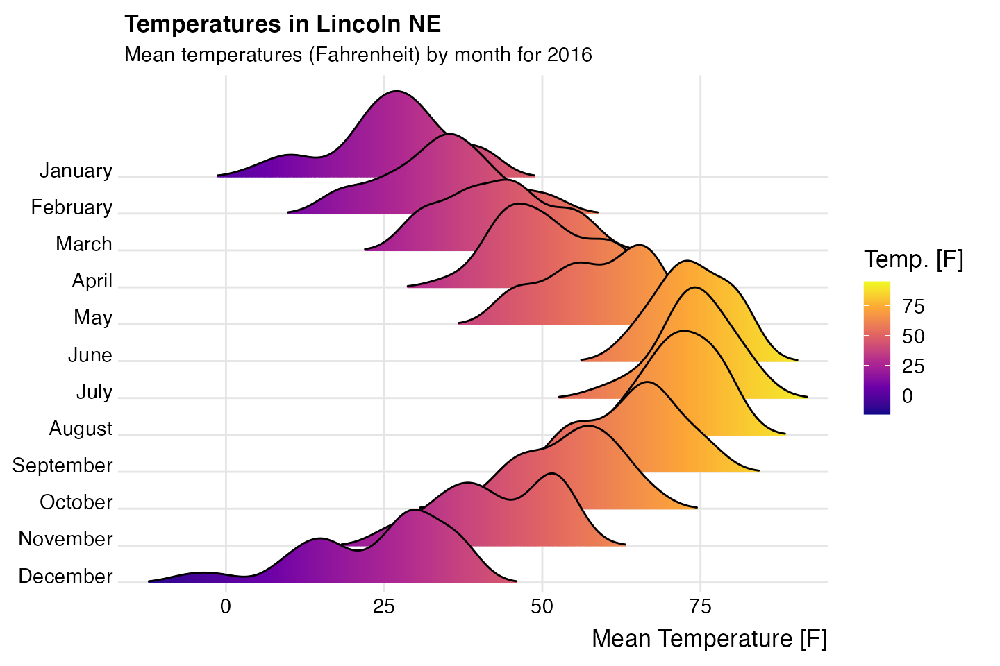
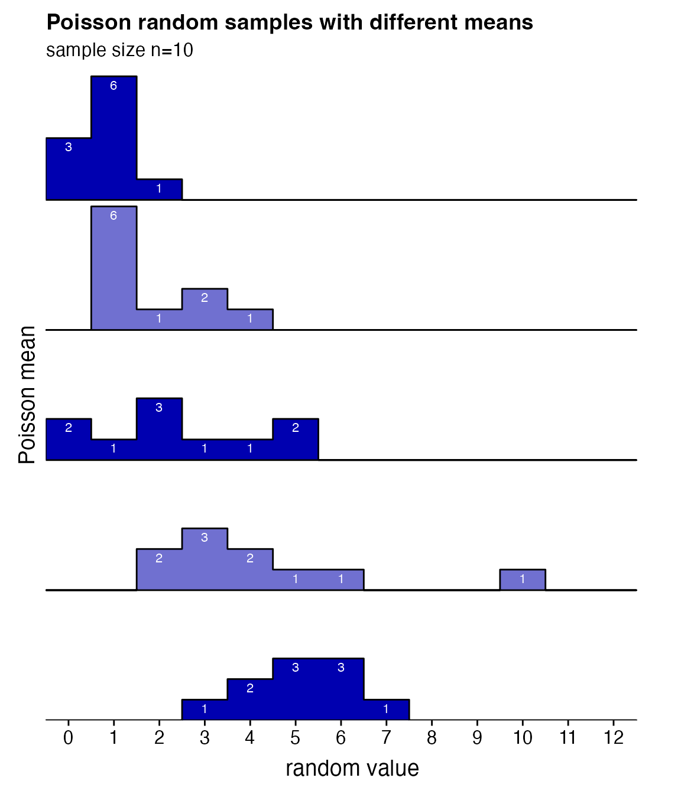
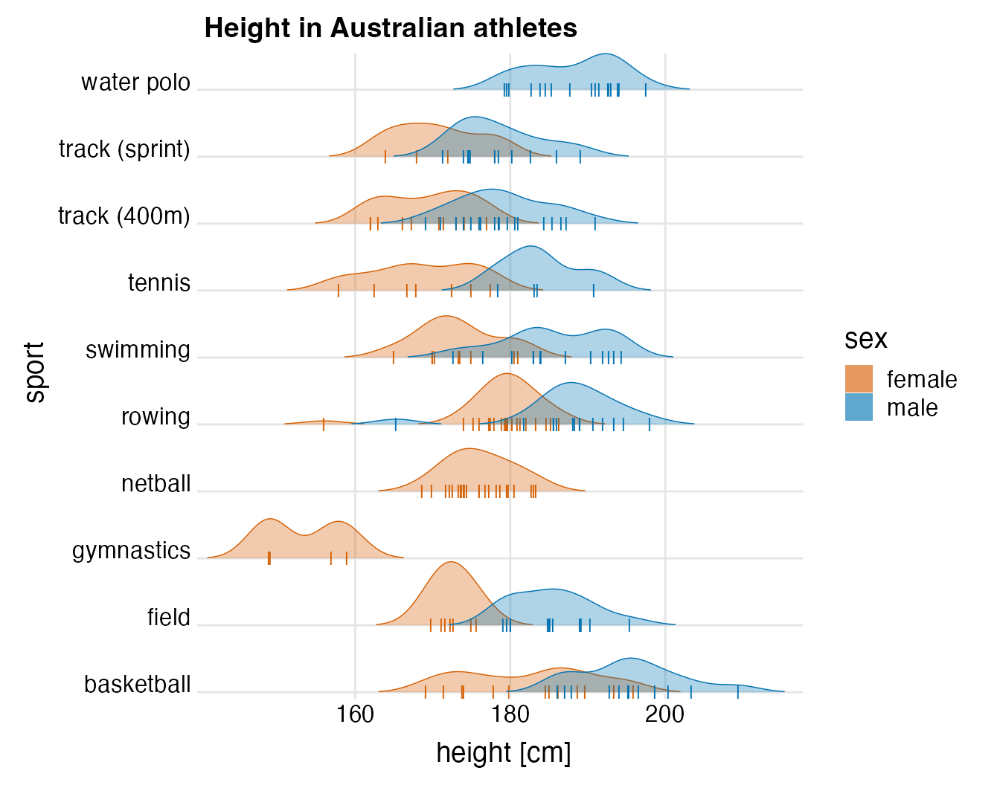
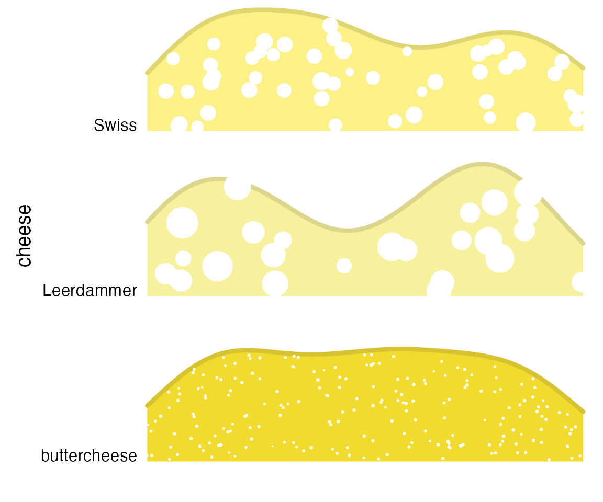

gallery.RmdData from the IMDB, as provided in the ggplot2movies package.
library(ggplot2movies)
ggplot(movies[movies$year>1912,], aes(x = length, y = year, group = year)) +
geom_density_ridges(scale = 10, size = 0.25, rel_min_height = 0.03) +
theme_ridges() +
scale_x_continuous(limits = c(1, 200), expand = c(0, 0)) +
scale_y_reverse(
breaks = c(2000, 1980, 1960, 1940, 1920, 1900),
expand = c(0, 0)
) +
coord_cartesian(clip = "off")
Modified after a figure originally created by Marc Belzunces.
library(dplyr)
library(forcats)
Catalan_elections %>%
mutate(YearFct = fct_rev(as.factor(Year))) %>%
ggplot(aes(y = YearFct)) +
geom_density_ridges(
aes(x = Percent, fill = paste(YearFct, Option)),
alpha = .8, color = "white", from = 0, to = 100
) +
labs(
x = "Vote (%)",
y = "Election Year",
title = "Indy vs Unionist vote in Catalan elections",
subtitle = "Analysis unit: municipalities (n = 949)",
caption = "Marc Belzunces (@marcbeldata) | Source: Idescat"
) +
scale_y_discrete(expand = c(0, 0)) +
scale_x_continuous(expand = c(0, 0)) +
scale_fill_cyclical(
breaks = c("1980 Indy", "1980 Unionist"),
labels = c(`1980 Indy` = "Indy", `1980 Unionist` = "Unionist"),
values = c("#ff0000", "#0000ff", "#ff8080", "#8080ff"),
name = "Option", guide = "legend"
) +
coord_cartesian(clip = "off") +
theme_ridges(grid = FALSE)
Modified from a blog post by Austin Wehrwein.
ggplot(lincoln_weather, aes(x = `Mean Temperature [F]`, y = Month, fill = stat(x))) +
geom_density_ridges_gradient(scale = 3, rel_min_height = 0.01, gradient_lwd = 1.) +
scale_x_continuous(expand = c(0, 0)) +
scale_y_discrete(expand = expand_scale(mult = c(0.01, 0.25))) +
scale_fill_viridis_c(name = "Temp. [F]", option = "C") +
labs(
title = 'Temperatures in Lincoln NE',
subtitle = 'Mean temperatures (Fahrenheit) by month for 2016'
) +
theme_ridges(font_size = 13, grid = TRUE) +
theme(axis.title.y = element_blank())
Inspired by a ggridges example by Noam Ross.
# generate data
set.seed(1234)
pois_data <- data.frame(mean = rep(1:5, each = 10))
pois_data$group <- factor(pois_data$mean, levels = 5:1)
pois_data$value <- rpois(nrow(pois_data), pois_data$mean)
# make plot
ggplot(pois_data, aes(x = value, y = group, group = group)) +
geom_density_ridges2(aes(fill = group), stat = "binline", binwidth = 1, scale = 0.95) +
geom_text(
stat = "bin",
aes(
y = group + 0.95*stat(count/max(count)),
label = ifelse(stat(count) > 0, stat(count), "")
),
vjust = 1.4, size = 3, color = "white", binwidth = 1
) +
scale_x_continuous(
breaks = c(0:12), limits = c(-.5, 13),
expand = c(0, 0), name = "random value"
) +
scale_y_discrete(
expand = expand_scale(add = c(0, 1.)), name = "Poisson mean",
labels = c("5.0", "4.0", "3.0", "2.0", "1.0")
) +
scale_fill_cyclical(values = c("#0000B0", "#7070D0")) +
labs(
title = "Poisson random samples with different means",
subtitle = "sample size n=10"
) +
guides(y = "none") +
theme_ridges(grid = FALSE) +
theme(
axis.title.x = element_text(hjust = 0.5),
axis.title.y = element_text(hjust = 0.5)
)
ggplot(Aus_athletes, aes(x = height, y = sport, color = sex, point_color = sex, fill = sex)) +
geom_density_ridges(
jittered_points = TRUE, scale = .95, rel_min_height = .01,
point_shape = "|", point_size = 3, size = 0.25,
position = position_points_jitter(height = 0)
) +
scale_y_discrete(expand = c(0, 0)) +
scale_x_continuous(expand = c(0, 0), name = "height [cm]") +
scale_fill_manual(values = c("#D55E0050", "#0072B250"), labels = c("female", "male")) +
scale_color_manual(values = c("#D55E00", "#0072B2"), guide = "none") +
scale_discrete_manual("point_color", values = c("#D55E00", "#0072B2"), guide = "none") +
coord_cartesian(clip = "off") +
guides(fill = guide_legend(
override.aes = list(
fill = c("#D55E00A0", "#0072B2A0"),
color = NA, point_color = NA)
)
) +
ggtitle("Height in Australian athletes") +
theme_ridges(center = TRUE)
Inspired by this tweet by Leonard Kiefer.
set.seed(423)
n1 <- 200
n2 <- 25
n3 <- 50
cols <- c('#F2DB2F', '#F7F19E', '#FBF186')
cols_dark <- c("#D7C32F", "#DBD68C", "#DFD672")
cheese <- data.frame(
cheese = c(rep("buttercheese", n1), rep("Leerdammer", n2), rep("Swiss", n3)),
x = c(runif(n1), runif(n2), runif(n3)),
size = c(
rnorm(n1, mean = .1, sd = .01),
rnorm(n2, mean = 9, sd = 3),
rnorm(n3, mean = 3, sd = 1)
)
)
ggplot(cheese, aes(x = x, point_size = size, y = cheese, fill = cheese, color = cheese)) +
geom_density_ridges(
jittered_points = TRUE, point_color="white", scale = .8, rel_min_height = .2,
size = 1.5
) +
scale_y_discrete(expand = c(0, 0)) +
scale_x_continuous(limits = c(0, 1), expand = c(0, 0), name = "", breaks = NULL) +
scale_point_size_continuous(range = c(0.01, 10), guide = "none") +
scale_fill_manual(values = cols, guide = "none") +
scale_color_manual(values = cols_dark, guide = "none") +
coord_cartesian(clip = "off") +
theme_ridges(grid = FALSE, center = TRUE)